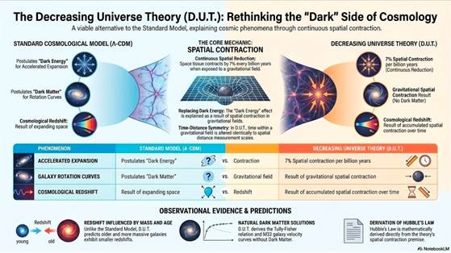

João Carlos Holland de Barcellos
"A DUT propõe que a 'Energia escura' e a 'Matéria escura' não existem, são apenas efeitos 'ilusórios' promovidos pelo campo gravitacional que faz encolher continuamente o espaço e tudo que estiver contido nele."
DUT Clique em: Busca Referências OSF-Files OpenAire Inglês

É interessante ver alguns textos resumidos por algumas “I.A.”s:
1-Você pode ler alguns textos resumidos:
https://jocaxx.github.io/DUniverse/Shorts/Shorts_AI.pdf
2-Você pode querer conhecer o Genismo (Filosofia):
https://jocaxx.github.io/genismo/
3-Você pode ver alguns resumos em Vídeo:
VID1: Introdução ao
D.U.T.
VID2: Rigoroso teste ao DUT
VID3: Dilatação do Tempo Cosmológico
VID4: Uma Revisão
VID5: DUT + Jocaxian Nothingness
VID6: FAQ - Perguntas Frequentes
VID7: Galáxias Sem Matéria Escura
VID8: Materia Escura X Gradiente
Gravitacional
——————–
Português
VID1:youtube.com/watch?v=T1xxj9hOgOU
VID2:youtube.com/watch?v=EhpLsV_0Q6U
VID3:youtube.com/watch?v=t-LR1kzAzxU
VID4:youtube.com/watch?v=HvehECmmtTw
VID5:youtube.com/watch?v=Y3B8us7zdUw
VID6:youtube.com/watch?v=_k8xsKss1wg
VID7:youtube.com/watch?v=mbTVkIAlUGY
VID8:youtube.com/watch?v=rrgA8aDXhzQ
——————–
(*) = Muito Importante
Teoria do Universo Decrescente: Correlação de Matéria Escura X Gradiente Gravitacional
“Na Teoria do Universo Decrescente (”DUT”), a “Matéria Escura” é explicada como um efeito ilusório causado pela contração diferenciada das estrelas em relação à sua distância do núcleo massivo de uma galáxia [1][17]. Este artigo apresenta uma análise sistemática de 47 galáxias, demonstrando que a fração aparente de matéria escura (fME) correlaciona-se com um fator de gradiente gravitacional derivado dos princípios da DUT.”(Julho/2026)
https://jocaxx.github.io/DUniverse/PORT/DIF_KIMI_POR_2.pdf
https://jocaxx.github.io/DUniverse/Html/POR_DIF_KIMI_2.htm
E se o Universo NÃO Estiver em Expansão? (Douglas Giles)
“O filósofo Thomas Kuhn argumentou que a ciência é”uma série de interlúdios pacíficos pontuados por revoluções intelectualmente violentas”, nos quais “uma visão de mundo conceitual é substituída por outra.” (A Estrutura das Revoluções Científicas, 1962) Os períodos mais longos e tranquilos de “ciência normal” são guiados por um paradigma dominante. A astrofísica viveu um desses interlúdios pacíficos por décadas, com sua crença de que o universo está em expansão. A teoria da expansão do universo é um paradigma que guia o pensamento dos astrofísicos sobre o universo.”
Resumo da “Teoria do Universo Decrescente”
A Teoria do Universo Decrescente (D.U.T.) propõe que o campo gravitacional contrai continuamente o espaço e tudo que nele
existe — réguas, átomos e relógios igualmente. Esse único efeito oferece uma explicação alternativa para dois dos principais enigmas da cosmologia
moderna:
A aparente expansão acelerada do universo, sem a necessidade de energia escura. ● As velocidades orbitais anômalas das estrelas nas galáxias,
sem invocar matéria escura. “(Julho/2026)
https://jocaxx.github.io/DUniverse/PORT/DUT_Resumo_PT.pdf
https://jocaxx.github.io/DUniverse/Html/POR_DUT_Resumo.htm
Teoria do Universo Decrescente: Galáxias sem Matéria
Escura (NGC 1052-DF2, DF4 e DF9)
“No modelo DUT (Teoria do Universo Decrescente), a”Matéria Escura” é explicada como um efeito da contração diferenciada das estrelas em relação à sua distância do núcleo massivo da galáxia. Veremos que podem existir galáxias nas quais esse efeito é muito pequeno, cujas causas corroboram as evidências deste modelo. “(Julho/2026)
https://jocaxx.github.io/DUniverse/PORT/DUT_NGC1052.pdf
https://jocaxx.github.io/DUniverse/Html/POR_DUT_NGC1052.htm
(*)Evidência Observacional de Redshifts Diferenciais Intrínsecos em Pares de Galáxias: Um Teste da
Teoria do Universo Decrescente (DUT)
“Neste trabalho, analisamos uma amostra rigorosamente controlada de 𝑛 = 700 pares de galáxias em ambientes densos (incluindo os aglomerados de Virgem, Fornax e Hidra). Os dados revelam uma assimetria sistemática persistente, na qual o componente primário mais massivo exibe um redshift menor do que o previsto em 56,28% dos casos. O teste estatístico de hipótese rejeita a simetria aleatória com um Z-score de 3,33 e um valor-p de 0,00043 (nível de confiança de 99,957%).” (Jun/2026)
https://jocaxx.github.io/DUniverse/PORT/DUT_GAL_POR.pdf
https://jocaxx.github.io/DUniverse/Html/POR_DUT_GAL.htm
(*)Teoria do Universo Decrescente: Dilatação Temporal Cosmológica e a Explosão de SN1A
“Mostraremos que, dentro da”Teoria do Universo Decrescente” (DUT), o tempo dentro de um campo gravitacional é alterado da mesma forma que as escalas de medição de distância espacial. Em escala cósmica (períodos de milhões de anos), esse efeito torna-se perceptível e explica a variação na duração medida das explosões de Supernovas Tipo Ia (SN1A).”(Maio/2026)
https://jocaxx.github.io/DUniverse/PORT/SN1A_POR.pdf
https://jocaxx.github.io/DUniverse/Html/POR_snova01.htm
DUT FAQ: Perguntas Frequentes sobre a “Teoria do
Universo Decrescente”
“Este documento apresenta os fundamentos da Teoria do Universo Decrescente (DUT), propondo que a origem de tudo está no conceito do”Nada Jocaxiano”, em vez do Big Bang tradicional. A premissa central sugere que a gravidade causa uma contração contínua da matéria e dos sistemas físicos, desafiando a percepção de uma expansão acelerada do cosmos. Ao contrário de outros modelos, a DUT concebe o espaço como um vácuo imutável, no qual apenas os elementos materiais diminuem de escala ao longo do tempo. O texto argumenta que essa nova perspectiva exige uma revisão da Relatividade Geral, permanecendo compatível com os princípios da Mecânica Quântica. Por fim, o autor esclarece perguntas frequentes para estabelecer a DUT como um arcabouço teórico alternativo e abrangente para a cosmologia moderna. “(Jun/2026)
https://jocaxx.github.io/DUniverse/PORT/FAQ_DUT_POR.pdf
https://jocaxx.github.io/DUniverse/Html/POR_FAQ_DUT.htm
Teoria do Universo Decrescente: A
Relação de Tully-Fisher
“Partindo da ‘Teoria do Universo Decrescente’ (DUT), particularmente
da fórmula que explica a ilusão
da matéria escura, derivaremos a relação de
Tully-Fisher para galáxias espirais.”(Maio/2026)
https://jocaxx.github.io/DUniverse/PORT/TullyF.pdf
https://jocaxx.github.io/DUniverse/Html/TullyF_Eng.htm
Análise da Correlação Massa-Redshift em Subgrupos com Velocidade Compatibilizada: Um
Teste Rigoroso para a Teoria do Universo Decrescente
“A teoria do Universo Decrescente (D.U.) propõe que o campo gravitacional induz uma contração espacial contínua, prevendo que galáxias mais massivas devem exibir um redshift menor à mesma distância [1]. O principal obstáculo para testar essa previsão é o ruído introduzido pelas velocidades peculiares das galáxias. Este estudo aplica uma metodologia rigorosa para isolar o efeito da massa, analisando a correlação entre massa estelar e redshift em subgrupos de galáxias com distância, idade e velocidade radial controladas. Os resultados mostram que, ao minimizar o ruído dinâmico, a correlação negativa prevista pela teoria D.U. emerge em subamostras específicas, sugerindo que o efeito gravitacional intrínseco pode ser detectável”(Abr/2026)
https://jocaxx.github.io/DUniverse/PORT/DU_MASSA.pdf
https://jocaxx.github.io/DUniverse/Html/POR_DU_MASSA.htm
A Idade das Galáxias como Fator Determinante do Redshift: Uma Análise sob a Perspectiva da Teoria do Universo Decrescente
“A teoria do Universo Decrescente (D.U.) propõe que o campo gravitacional induz uma contração contínua do espaço, oferecendo uma explicação alternativa para o redshift cosmológico. Uma dedução crucial e lógica dessa teoria é que o tempo de exposição de uma galáxia ao campo gravitacional, ou seja, sua idade, deve influenciar diretamente o redshift observado. Galáxias mais antigas, tendo acumulado mais tempo sob contração espacial, devem exibir um redshift menor. Este artigo examina essa previsão, usando a diferença de redshift observada entre galáxias antigas (elípticas) e jovens (espirais) em aglomerados como um teste observacional primário para a teoria D.U.”(Mar/2026)
https://jocaxx.github.io/DUniverse/PORT/DU_IDADE.pdf
https://jocaxx.github.io/DUniverse/Html/POR_DU_IDADE.htm
´O modelo do “Universo Decrescente”: uma perspectiva alternativa à expansão acelerada´
“A compreensão da evolução do universo tem sido dominada pelo Modelo Cosmológico Padrão, conhecido como ?-CDM. Esse modelo amplamente aceito postula a existência de matéria escura e, crucialmente, energia escura para explicar a expansão acelerada observada do universo.1 No entanto, a energia escura permanece uma entidade de origem desconhecida e indetectável, apresentando um desafio teórico significativo.2…”(Jun/2025)
https://jocaxx.github.io/DUniverse/PORT/DUT_ALL_POR.pdf
https://jocaxx.github.io/DUniverse/Html/POR_DUT_ALL.htm
(*)´Universo Decrescente: O Efeito da ‘Matéria Escura’´
“Após uma breve revisão do modelo do Universo Decrescente (U.D.), derivaremos uma fórmula e o gráfico da velocidade aparente das estrelas (de uma galáxia Messier_33) em função de sua distância radial ao centro galáctico. Essa fórmula reproduz a mesma curva de velocidade tradicionalmente atribuída à matéria escura.”(Abr/2025)
https://jocaxx.github.io/DUniverse/PORT/DU_MATERIA_ESCURA_2.pdf
https://jocaxx.github.io/DUniverse/Html/POR_DU_MATERIA_ESCURA.htm
´Universo Decrescente: A CMB e a Idade do Universo´
“Usaremos a teoria do”Universo Decrescente” (U.D.) para estimar a idade do Universo com base no comprimento de onda médio da radiação Cósmica de Fundo em Micro-ondas (CMB).”(Maio/2025)
https://jocaxx.github.io/DUniverse/PORT/DU_CMB.pdf
https://jocaxx.github.io/DUniverse/Html/POR_DU_CMB.htm
(*)´Universo decrescente: a distância em função
do redshift (novo)´
“Usando o modelo
do”Universo Decrescente”1, mostraremos evidências de que esse novo modelo da dinâmica do Universo é menos disruptivo e mais adequado do que o modelo tradicional L-CDM, que postula a
existência de Energia Escura.
Também desenvolveremos, a partir dessa nova teoria, uma fórmula matemática
simples e direta que fornece a distância da galáxia em função
de seu redshift.”(Fev/2025)
(*)´Derivação da Lei de Hubble e sua relação com a energia
escura e a matéria escura´
“A partir do modelo
do”Universo Decrescente”,1,2
estabelecendo a contração
do tecido espacial quando exposto a
um campo gravitacional, derivamos
a Lei de Hubble e, a partir dela, explicaremos
o efeito “Energia Escura”
“.(Mar/2019)
https://jocaxx.github.io/DUniverse/PORT/Derivacao_Hubble.pdf
https://jocaxx.github.io/DUniverse/Html/evidencias3.htm
Derivação da Lei de Hubble e o Fim dos Elementos
Escuros
“A partir do modelo do”Universo Decrescente”, estabelecendo a contração do tecido espacial quando exposto a um campo gravitacional, derivamos a Lei de Hubble e, a partir dela, explicaremos os efeitos “Energia Escura” e “Matéria Escura”.”(Abr/2019)
´O Princípio da Equivalência e o Fim da Energia Escura´
“Faremos uma nova abordagem para um efeito conhecido como”Energia Escura” através de um efeito no campo gravitacional.[1] Em um foguete acelerado, as dimensões do espaço no sentido do movimento, devido à “Contração de Lorentz”, estão em redução contínua. Usando o princípio da equivalência, presumimos que, no campo gravitacional, ocorreria o mesmo. Isso implica no “efeito de energia escura”. Os cálculos mostram que uma contração de 7% a cada bilhão de anos explicaria nossa observação de galáxias em separação acelerada.”(Jan/2017)
https://www.ijera.com/papers/Vol7_issue1/Part-1/C0701011314.pdf
Vídeo : https://www.youtube.com/watch?v=qu7mTDB4T6U
´O Campo Gravitacional e a
Energia Escura´
“Escrevo aqui sobre uma nova ideia de cosmologia que busca resolver o problema da energia escura e da matéria escura, eliminando a necessidade de postular sua existência. (Jul/2016)
https://www.researchgate.net/publication/357878234_The_Gravitational_Field_and_the_Dark_Energy
https://ijrdo.org/index.php/as/article/view/1311/1238
´O Universo, Segundo Jocax´
“Abordaremos algumas das principais questões sobre nosso Universo, como teorias sobre sua origem, tipos de Universos (Universo Virtual, Universos Paralelos), e questões sobre sua finitude, propósito, eternidade e seu fim.”(Jun/2025)
´O Trem Jocaxiano´
“Este artigo apresenta duas situações simples e análogas relacionadas ao clássico experimento mental conhecido como”Trem de Einstein”, que explica a dilatação temporal da teoria da relatividade especial, apontando em seguida uma contradição lógica entre elas.”(2017)
https://jocaxx.github.io/DUniverse/PORT/Trem_Jocaxiano.pdf
https://jocaxx.github.io/DUniverse/Html/POR_Trem_Jocaxiano.htm
´A Definição Jocaxiana de Tempo´
“O tempo sempre foi um mistério da filosofia e da física desde seus primórdios. Propomos uma nova definição de tempo que, além de ser objetiva, promove uma melhor compreensão desse conceito tão importante.”(Jan/2023)
https://jocaxx.github.io/DUniverse/PORT/O_Tempo_Segundo_Jocax.pdf
https://jocaxx.github.io/DUniverse/Html/POR_JOCAX_TEMPO.htm
´Teoremas
Jocaxianos´
https://jocaxx.github.io/DUniverse/PORT/Teoremas_Jocaxianos.pdf
https://jocaxx.github.io/DUniverse/Html/POR_Teoremas_Jocaxianos.htm
(*)’O Nada Jocaxiano´
“Este artigo explica uma teoria sobre a origem das leis da física e do Universo”
https://jocaxx.github.io/DUniverse/PORT/O_Nada_Jocaxiano.pdf
https://jocaxx.github.io/DUniverse/PORT/POR_O_Nada_Jocaxiano_Faq.htm
O Nada Jocaxiano (outra versão):
Texto:https://jocaxx.github.io/DUniverse/Todos/Gemini_JN.pdf
VID1:https://www.youtube.com/watch?v=eNaN7PgVzy0
VID2:https://www.youtube.com/watch?v=UyRd7zr-Pf8
—- Fim —-
Outros Artigos:
https://jocaxx.github.io/DUniverse/Abstract/Pub_Abstract.pdf
D.U.T. mais antigo:
O FIM DA ENERGIA ESCURA
Lista do Fórum | Respostas | Postar Mensagem | Voltar aos Tópicos do Fórum
Postado por Joao Carlos Holland De Barcellos em 19 de junho de 2011, 19:09:36 UTC
http://www.astronomy.net/forums/general/messages/4886.shtml
SCRIBD:
https://pt.scribd.com/document/53743944/Universo-Diminuinte-Eng
(Todos os arquivos: https://jocaxx.github.io/DUniverse/Todos/Lista_Pdf.html )
e-mail: jocaxx@gmail.com